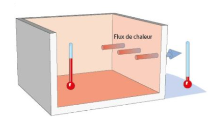
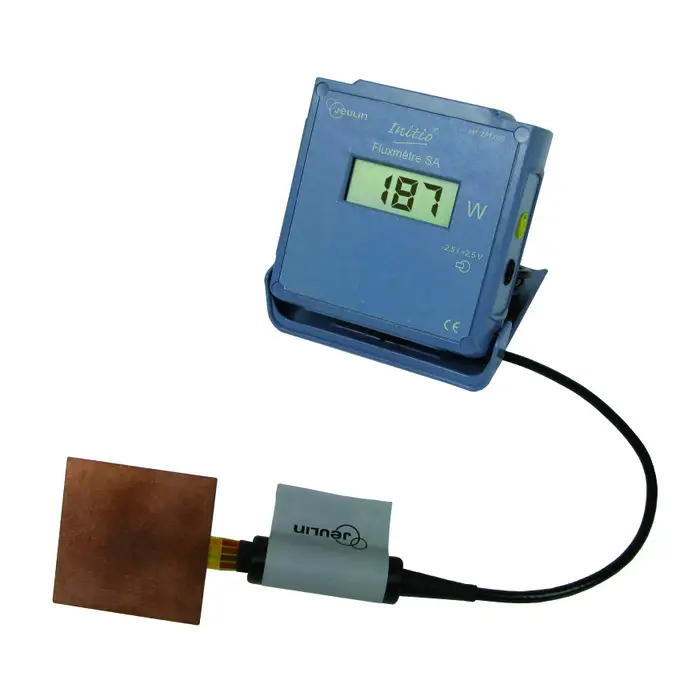
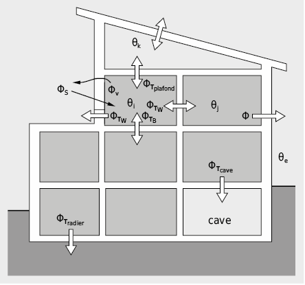
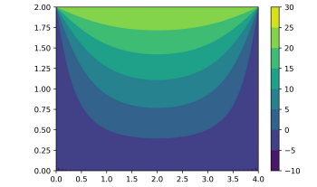
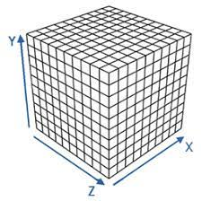
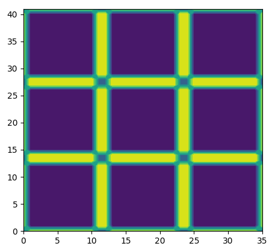
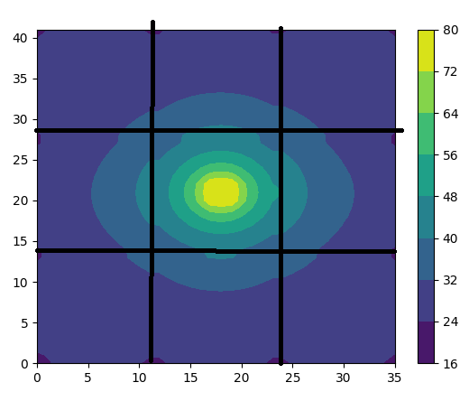
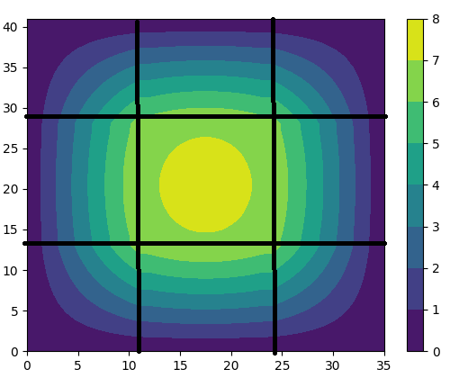
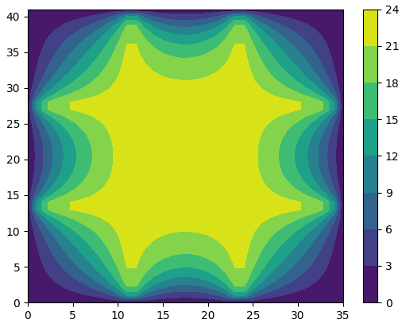
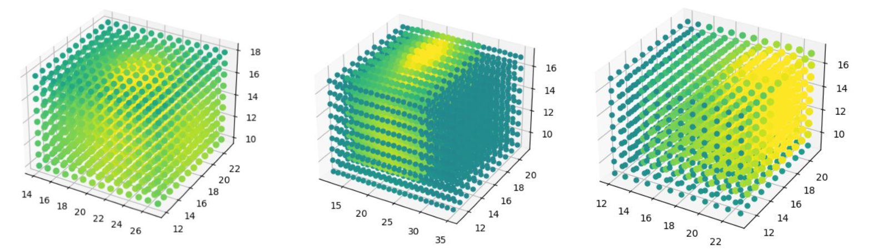

||r||, entre une durée t et t+dt.Remarque : On expérimente que, plus d2S est grand, plusla quantité d'énergie échangée est importante. De même, plus la durée dt est longue, plus la quantité d'énergie échangée est importante.Cette dernière remarque nous permet d'admettre l'existence d'un vecteur jth(r, t) tel que 𝛿Q (r, t)=jth(r, t)⋅d2S×dtAinsi jth(r, t) représente la densité du courant thermique en un point de contact entre deux milieux.I.II.II. Lois phénoménologiques relatives aux modes de transferts thermiques Afin de calculer la quantité d'énergie échangée, on souhaite donc connaître le vecteur densité de courant. Concernant la conduction, il n'y a dans les faits qu'une loi phénoménologique de Fourier.Théorème1Loi de Fourier (conduction)jth(r, t)=-𝜆grad(T),a
T la température en Kelvin
𝜆 la conductivité thermique en W.m-1.K-1
Domaine de validité : écarts de température de 2K à 50K → C'est bon pour nos expériences :)On peut donner des valeurs usuelles de 𝜆 :𝜆air=0.026 W.m-1.K-1𝜆verre=1.2 W.m-1.K-1𝜆cuivre=390 W.m-1.K-1Remarque : La conductivité thermique de l'air (supposé immobile) est très faible. C'est donc un très bon isolant !Concernant la convection, Newton nous dit que le mécanisme de transfert par convection entre un solide vers un fluide est régi par la loi :Théorème2Loi de Newton (convection)jth(r, t)=h×(Tsolide-Tfluide)⋅r
||r||, h le coefficient d'échange convectifI.III. Le flux thermique Notre étude porte sur les pertes thermiques d'un bâtiment. Que représentent-elles physiquement ?Simplement, c'est le transfert thermique qui s'écoule d'un milieu à un autre par unité de temps dt. C'est alors homogène à une puissance (en Watt).On définit alors :
a
𝛿Q (r, t)
dt
=𝜙
=jth(r, t)⋅d2S
On peut ainsi formaliser un problème de transfert de chaleur, on note 𝜙E et 𝜙s le flux entrant et sortant d'un système. On peut ainsi appliquer le premier principe de la thermodynamique à un système ne recevant pas de travail et ne produisant pas de chaleur :dUΣ=Qext→Σd'où dUΣ
dt=Qext→Σ
dt=𝜙E-𝜙sOn peut alors suivre l'évolution de l'énergie interne d'un système dans le temps, en établissant l'expression des différents flux grâce aux expressions de la Section I.II.II.I.IV. La résistance thermique Une dernière grandeur à introduire est celle de la résistance thermique. Nous avons vu qu'il existe un coefficient 𝜆 caractérisant la conductivité thermique d'un matériau. On doit donc pouvoir le relier à une grandeur plus générale tenant compte des données d'un problème.Pour établir cette notion de résistance thermique, nous allons étudier un problème en régime permanent.I.IV.I. Un problème de mur On considère un mur constitué d’un matériau homogène et indéformable de conductivitéthermique constante, d’épaisseur e. On suppose que la hauteur et la profondeur du mur sont trèsgrandes devant son épaisseur : cela nous permet de faire l'hypothèse que le flux de chaleur ne se propagera que de façon unidirectionnelle. xgrad(T)TextTintAvec ces hypothèses, on a donc T qui ne dépend que de x. Autrement dit : grad2(T)=d2T
dx2eT∞Nous démontrerons dans le Chapitre III, Section IV.III. le résultat suivant :
En régime permanent, grad2(T)=d2T
dx2=0
Ainsi T est affine et on en déduit T(x)=Text-Tint
ex+TintOn peut alors déterminer la densité de courant thermique s'effectuant par convection d'après le Théorème 1: a
jth(ex, ∅)
=-𝜆grad(T)
=-𝜆dT
dxex
= 𝜆Tint-Text
eex
Remarque : Si la température intérieure est plus faible que la température extérieure, alors le vecteur densité de courant thermique se dirigera bien des températures fortes, vers les températures faibles. Le signe de l'expression est donc cohérent : la chaleur s'écoule du chaud vers le froid.On peut ainsi déterminer le flux de chaleur 𝜙 traversant une surface S du mur : a
𝜙
=∫murjth⋅d2S
=𝜆×S×Tint-Text
e
=Tint-Text
e
𝜆S
=∆T
Rthermique
TintTextOn souhaite maintenant calculer 𝜙′, le flux de chaleur traversant une surface S du mur en prenant en compte les mouvements convectifs d'un des côtés du mur. On a donc d'après le Théorème 1 et le Théorème 2 : a
jth(ex, ∅)
=𝜆Tint-Text
eex
= h(Text-T∞)ex
puis on a après quelques calculs : a
𝜙'
=Tint-T∞
e
𝜆S+1
hS
=ΔT
Rthermique
I.IV.II. Généralisation On admet que pour chaque géométrie, il existe une grande Rthermique telle que l'on puisse écrire 𝜙=∆T
Rthermique. Pour chaque géométrie le principe est le même : On exprime la quantité jth(r, t).d2S puis on intègre. Voici une liste des expressions des résistances thermiques que nous avons calculé :Théorème3Résistances thermiques.Pour un mur plan d'épaisseur e, de surface SRthermique=e
𝜆SPour un cylindre creux de rayons R1, R2 et de hauteur HRthermique=lnR2
R1
2𝜋𝜆HPour un flux convectifRthermique=1
hS De plus, on admet que pour n'importe quelle géométrie, on peut donner une Rthermique équivalente à l'ensemble des conditions du problème. Ainsi on a Rthermique, eq=∑RthermiqueChapitre II. Récapitulatif sur un exemple plus compliqué Nous allons essayer de mettre en pratique les différents objets à notre disposition. On considère encore une fois un mur séparant deux milieux d'air subissant sur ses surfaces un phénomène de convection.𝜙1𝜙2𝜙3On a alors𝜙1=Text-Text∞
1
hextS𝜙2=Tint-Text
eb
𝜆bS𝜙3=Tint∞-Tint
1
hintSPar conservation du flux en régime permanent on a notamment 𝜙1=𝜙2=𝜙3. Ce qui nous permet de sommer les trois égalités et d'obtenir finalement : 𝜙=Tint∞-Text∞
1
hintS+eb
𝜆bS+1
hextSTint∞-Text∞ étant une constante, on peut calculer le flux 𝜙=𝜙1=𝜙2=𝜙3 et réinjecter cela dans chacune des équations pour trouver les températures respectives Tint et Text. Ensuite comme montré dans la Section I.IV.I. on a T(x)=Text-Tint
ebx+TintOn peut donc connaître la température en tout point du mur !!Une application numérique intéressante est de calculer la température Tint de notre mur avec les données suivantes :aTint∞= 20°C ; Text∞=-5°C ;hint= 5 W/m2/K ; hext= 10 W/m2/K ;𝜆b=2W/m/Keb= 10 cmS=1m2On a alors, Tint=6℃ ! Alors même que la température de la pièce est supposée constante. Ainsi on l'aura compris, si on ne suppose plus Tint∞ comme constante, celle-ci décroîtra d'autant plus que la température du mur sera faible (ΔT plus élevée).On peut alors rajouter une couche d'isolant à notre mur, en aval ou en amont, d'une épaisseur lb=10 cm et de conductivité 𝜆iso=0.04W/m/K (conductivité habituelle d'un isolant)On a ainsi un flux total𝜙=Tint∞-Text∞
1
hintS+lb
𝜆isoS+eb
𝜆bS+1
hextSEnfin la nouvelle application numérique donne Tint=18.3℃ ! On voit donc bien que l'ajout d'un isolant permet de diminuer grandement les gradients de température, et donc les flux de chaleur d'un milieu à un autre ! :)Chapitre III. Expérience no.1 Afin de valider certaines des expressions que nous venons d'établir, nous souhaitons calculer la résistance thermique d'un matériau.Nous avons donc décidé de construire un modèle simplifié d'immeuble, avec deux étages, 9 appartements par étages, et tous séparés par de l'isolant dont on connait les propriétés. III.I. Résistance thermique des parois extérieurs Une première étape à été de créer les parois extérieures, et donc naturellement nous avons voulu mesurer les capacités d'isolant de notre mur :

Pour valider nos calculs, nous devons nous placer dans les mêmes conditions, à savoir : un régime permanent. On doit donc fermer complètement notre boite, la chauffer de l'intérieur puis attendre un régime permanent afin de commencer les mesures.III.II. Les outils nécessaires D'abord, l'apport en chaleur doit se faire de l'intérieur car il est difficile de chauffer l'extérieur et ainsi créer un gradient de température (ie un flux de chaleur ici). On utilisera donc des lampes. Les mesures des températures doivent aussi se faire rapidement. Un premier problème a été l'utilisation d'un thermomètre basique, avec une inertie thermique très grande : ainsi il fallait plusieurs minutes pour avoir la température actuelle de l'environnement. L'utilisation de thermocouples était donc nécessaire.Enfin, si on regarde notre équation : 𝜙=∆T
Rthermique, si nous voulons la résistance thermique, il nous faut un moyen de calculer le flux thermique traversant les parois de notre bâtiment. Pour cela nous pouvons utiliser un fluxmètre :

Cet outil est capable de donner les différents flux traversant deux environnements :

III.III. Les mesures et la cohérence Afin de chauffer notre bâtiment et se rendre à un régime permanent, il nous a fallu une dizaine de minutes. En effet, notre boite, vide, a un volume de 28×33×23 cm3, et nous utilisons deux petites lampes pour les chauffer. Ensuite, l'utilisation du fluxmètre de surface de contact de 3×3cm2, nous a donné une valeur du flux traversant notre paroi : 0.1 WGrâce aux thermocouples que nous avions placé à l'intérieur et à l'extérieur de la boîte nous avons pu calculer la différence de température, ici de 20℃ (donc une différence de température de 20K également), nous avons donc une valeur de la résistance de notre paroi : 200 m2.K.W-1.Ainsi nous avons deux matériaux, de conductivités thermiques : 0.03 W.m-1.K-1 et 0.1 W.m-1.K-1 pour l'isolant. De plus le coefficient h de convection thermique de l'air dans des conditions naturelles est de 10W.m-2.K-1. On peut donc calculer la résistance thermique théorique que nous devrions avoir : Rthermique, théorique=ebois
𝜆boisS+eisolant
𝜆isolantS+1
hS=188+333+111=632 m2.K.W-1Remarque : nous supposons les dimensions de notre bâtiment relativement grandes par rapport à l'épaisseur des murs, ce qui nous donne le droit d'utiliser ces formules.Enfin, nous pouvons comparer : Aïe pourquoi une valeur si différente ? Afin d'être cohérent avec la résistance théorique il aurait fallu que nous trouvions un flux thermique de 0.03 W. Là vient un problème, notre fluxmètre a une résolution du dixième de Watt, et donc par conséquent ne peut pas nous donner le flux voulu.III.IV. Deuxième session de mesures Nous décidons maintenant de nous mettre dans des conditions où notre fluxmètre a la résolution de nous donner une valeur de flux en accord avec la théorie. Pour cela nous allons sortir une tranche d'isolant, d'une épaisseur différente eisolant′=0.8 cm, que nous allons chauffer pour créer une différence de température de 30℃. Dans ces conditions, la nouvelle résistance thermique à trouver est 296. Ainsi le flux que l'on espère trouver est de 𝜙=0.1W.Bingo! Nous trouvons 0.1 W. Cependant nous avons voulu vérifier que le fluxmètre ne donnait pas que 0.1W et nous avons trouvé d'autres matériaux non isolants à tester. Le flux atteint parfois 0.8W, ce qui nous laisse penser que nos mesures sont finalement correctes :)III.V. Que devons nous étudier maintenant ? Nous sommes désormais capable de retrouver les capacités thermiques d'un matériau dans une géométrie simple. Caractériser un bâtiment comme thermiquement isolé ou non est intéressant mais nous souhaitons aller plus loin et mieux comprendre le phénomène de chaleur et de pertes. Maintenant nous aimerions observer, quantitativement, comment la "chaleur se perd". Les premières recherches que nous avons portées à ce sujet sont celles sur l'équation de chaleur. Nous aimerions donc arriver à visualiser une distribution de chaleur dans une géométrie.

Chapitre IV. L'équation de chaleur Qu'est donc cette équation de chaleur ? Il s'agit de la distribution de la température dans un volume sachant le temps t, et les variables d'espace x, y, z (en base cartésienne). Nous avons décidé d'essayer de mettre en place un système thermodynamique afin de retrouver l'équation de chaleur bien connue des physiciens.IV.I. Système thermodynamique étudiéΣ𝛿Qext→Σd3VOn a donc :→ VΣ=∫volumed3V→ md3V=dm→ 𝛿Qext→Σ=𝜙E-𝜙S→ homogène, masse volumique𝜌On a alors d'après le premier principe de la thermodynamique :
a
dU
=dm×Cthermique×dT
=𝛿Qext→Σ
IV.II. Les calculsAprès quelques calculs on obtient a
dU
dt
=∫volumed3V×𝜌×Cthermique∂T
∂t
=𝜙E-𝜙S
Ensuite, d'après (4)𝜙E-𝜙S=∫surface(-jth(r, t)⋅d2S)Puis d'après le Théorème 1 :𝜙E-𝜙S=∫surface𝜆grad(T).n×d2SNous nous retrouvons donc avec l'égalité :∫volumed3V×𝜌×Cthermique∂T
∂t=∫surface𝜆grad(T).n×d2SNous aimerions obtenir une égalité au niveau local. Différents théorèmes mathématiques nous permettent de transformer l'intégrale sur la surface en une intégrale sur le volume. Puis nous étudierons l'égalité des intégrandes.∫surface𝜆grad(T).n×d2S=∫volume𝜆×grad2(T)×d3VEnfin la relation locale de l'équation de chaleur est : Théorème4Equation de chaleur𝜌×Cthermique∂T
∂t=𝜆×grad2(T)IV.III. Retour sur le problème du mur Nous avions précédemment admis un résultat sur le régime stationnaire. Nous en avons maintenant une preuve. Lors d'un régime stationnaire : dT
dt=0. Puis on a naturellement grad2(T)=0IV.IV. Etude de l'équation Dans le cas d'un problème dans un espace muni d'un repère cartésien on a donc T=T(x, y, z, t). Puis, ∂T
∂t(x, y, z, t)=𝜆
𝜌×Cthermique×(∂2T
∂x2+∂2T
∂y2+∂2T
∂z2) La résolution analytique de cette équation est totalement hors de notre porté, c'est pour cela que nous avons décidé de nous intéresser (au moins dans un premier temps), uniquement au régime stationnaire. Nous pouvons alors tenter de résoudre ce genre d'équation numériquementIV.IV.I. Laplace L'équation de Laplace est une conséquence de l'équation de chaleur en régime permanent. D'après (8), on a en régime permanent0=𝜆
𝜌×Cthermique×(∂2T
∂x2+∂2T
∂y2+∂2T
∂z2)Puis par intégrité∂2T
∂x2+∂2T
∂y2+∂2T
∂z2=0Chapitre V. Résolution numérique V.I. Discrétisation du problème Il s'agit ici de considérer non pas un problème continu mais de le discrétiser afin de simplifier les dérivées partielles. On considère donc un maillage discret de notre bâtiment.

On considère que les distances entre chaque maillage sont de 1=𝛿. Ainsi on peut faire les approximations suivantes sur les expressions des dérivées partielles d'ordre 1 :∂T(x+𝛿
2,y,z)
∂x=T(x+𝛿,y,z)-T(x,y,z)
𝛿∂T(x,y+𝛿
2,z)
∂y=T(x,y+𝛿,z)-T(x,y,z)
𝛿∂T(x,y,z+𝛿
2)
∂z=T(x,y,z+𝛿)-T(x,y,z)
𝛿De même nous pouvons effectuer ces mêmes approximations pour les dérivées partielles d'ordre 2 :
∂2T(x,y,z)
∂x2=∂T(x+𝛿
2,y,z)
∂x-∂T(x-𝛿
2,y,z)
∂x
𝛿=T(x+𝛿,y,z)+T(x-𝛿,y,z)-2T(x,y,z)
𝛿2∂2T(x,y,z)
∂y2=∂T(x,y+𝛿
2,z)
∂y-∂T(x,y-𝛿
2,z)
∂y
𝛿=T(x,y+𝛿,z)+T(x,y-𝛿,z)-2T(x,y,z)
𝛿2∂2T(x,y,z)
∂z2=∂T(x,y,z+𝛿
2)
∂z-∂T(x,y,z-𝛿
2)
∂z
𝛿=T(x,y,z+𝛿)+T(x,y,z-𝛿)-2T(x,y,z)
𝛿2
Enfin, en effectuant la somme de ces trois égalités on obtient enfinThéorème5Equation des températures pour un maillagea
6×T(x,y,z)=
T(x+𝛿,y,z)+T(x-𝛿,y,z)+
T(x,y+𝛿,z)+T(x,y-𝛿,z)+
T(x,y,z+𝛿)+T(x,y,z-𝛿)
V.II. Etude en deux dimensionsV.II.I. Les mailles sans souci La première étape de l'étude de la distribution de la chaleur en deux dimensions a été de programmer la fonction du Théorème 5. Elle prénd en argument les températures des 4 mailles les plus proches :
V.II.II. Les mailles extrêmes L'équation donnée par le Théorème 5 n'a cependant de sens que pour des mailles internes. On entend par là qu'il faut que ce soit des mailles entourées par d'autres mailles. Il vient donc que ces équations ne fonctionnent pas partout dans notre immeuble : la température des coins ainsi que des bords des murs ne sont pas calculables ainsi.On peut alors donner les formules en 2D donnant la température du bord d'une surface. On considère un bord d'une surface et un maillage espacé de e :𝜙1𝜙2𝜙3𝜙sOn souhaite avoir 𝜙S=Text-Ti,j
Rparoi, et on a par conservation du flux : 𝜙1+𝜙2+𝜙3=𝜙Seeea𝜙1=Ti,j-Ti,j+1
2
𝜆aire𝜙2=Ti,j-Ti-1,j
1
𝜆aire𝜙3=Ti,j-Ti,j-1
2
𝜆aireEn faisant la somme de ces trois flux et en exploitant l'égalité avec 𝜙S, on obtient finalement :Ti,j=2Ti-1,j+Ti,j-1+Ti,j+1+2×1
𝜆aire×Rparoi×Text
2×(1
𝜆aire×Rparoi+2)On décide de prendre un Rparoi=2
haire2+liso
𝜆isoe2+lmur
𝜆mure2. Représentant un mur et un isolant mis en série et subissant un transfert convectif avec l'air aux deux extrémités.On peut alors introduire une nouvelle grandeur. Il s'agit du nombre de Boula. Cette grandeur rend compte à la fois de la conductivité d'une paroi et du coefficient de convection sur la surface. On aa
Boula1
=1
𝜆aire×(2
haire2+liso
𝜆isoe2+lmur
𝜆mure2)
=1
2𝜆air
haire+𝜆airliso
𝜆isoe+𝜆airlmur
𝜆mure
Lorsque la maille est en contact avec une paroi composée d'un mur et d'un isolant.a
Boula2
=1
𝜆aire×(2
haire2+liso
𝜆isoe2)
=1
2𝜆air
haire+𝜆airliso
𝜆isoe
Lorsque la maille est en contact avec une paroi composée d'un isolant uniquement. Ce qui est le cas des parois intérieures de notre bâtiment.On a alors une expression plus exploitable de la température : Ti,j=2Ti-1,j+Ti,j-1+Ti,j+1+2×Boula×Text
2×(Boula+2)On peut procéder exactement de la même manière pour donner la température d'un coin intérieur :Ti,j=(Ti-1,j+Ti,j-1)+2×Boula×Text
2×(Boula+1)On peut alors intégrer deux nouvelles fonctions à notre programme Python :
On crée alors une grille avec le module pylab et mathplotlib. Voici notre grille, où les couleurs indiquent si la maille est une maille extrême en contact avec un mur ou si c'est un coin :

On effectue ensuite les deux applications du nombre de Boula :a
Boula1
=1
2𝜆air
haire+𝜆airliso
𝜆isoe+𝜆airlmur
𝜆mure
=0.85
Boula2
=1
2𝜆air
haire+𝜆airliso
𝜆isoe
=1.25
V.II.III. Chauffage au centre On dispose maintenant d'un modèle numérique d'un étage de notre bâtiment, on souhaite alors connaître la distribution de chaleur au sein de cet étage sachant que l'appartement du milieu est chauffé à température constante 80℃ en son centre.La modélisation de notre bâtiment (avec toutes les bonnes valeurs) nous donne alors le résultat suivant :

Ainsi, déjà c'est beau ! On remarque alors directement que l'appartement du milieu est très chaud. Que les coins sont plus froids et c'est logique : étant exposés à deux surfaces, l'écoulement de chaleur est plus important. Si on fait une moyenne des températures des salles, on obtient :Salle en diagonale = 24Salle adjacente = 35On essaiera de retrouver expérimentalement cette différence de température. Aussi, il semblerait qu'il y ait un souci dans notre programme. Mais même après maintes révisions, on ne trouve toujours pas pourquoi est-ce qu'il y a des températures de 16 degrés sur les coins extérieurs.V.II.IV. On laisse à l'air libreLa deuxième modélisation que nous souhaitons réaliser est la suivante : on considère que toutes les mailles de notre bâtiment sont initialement à température de 23℃, et que l'extérieur est à 0℃. On souhaite alors voir comment les appartements vont se refroidir.

Encore une fois tout semble logique ! Ici nous avons stoppé le programme après un millier d'itérations. Ce n'est donc pas représentatif du régime permanent (dans lequel on doit être pour utiliser nos équations). Cependant cela représente comment en réalité l'écoulement de la chaleur s'effectue.V.II.V. On s'amuse un peu avant les expériences Nous avons voulu réaliser une dernière modélisation : on suppose les parois intérieures quasiment parfaites, et on regarde comment le bâtiment se refroidit :

Le résultat est encore une fois complètement logique. La pièce intérieure n'a pas subi de perte de température.Chapitre VI. Expérience no.2 Notre dernière expérience a pour but de valider la théorie et les modèles que nous venons de créer. Pour cela nous allons mener en réalité deux mesures.On va tout d'abord placer une source de chaleur dans la pièce centrale de l'étage du haut de notre bâtiment. On utilisera une lampe qui, en régime pernanent, peut être considérée de température constante. Ensuite nous allons placer deux thermocouples : un dans une pièce en diagonale et un autre dans une pièce adjacente. Après une quinzaine de minutes, on obtient les deux courbes suivantes :temps en sTempérature en ℃On obtient donc deux ordres 1, de constante de temps d'environ 200 secondes. Soit 3 minutes et demi. La salle adjacente (en bleu) semble voir sa température se stabiliser autour de 45℃. Et la salle en diagonale (en vert) semble voir sa température se stabiliser autour de 38℃.Ainsi on retrouve bien une différence de température significative entre les deux appartements ! Ce qui valide les résultats du modèle Section V.II.III.Chapitre VII. Conclusion A ce stade, nous considérons avoir terminé nos recherches dans le cadre de notre première année de préparationnaires. Ce projet nous a permis : • De voir un nouveau thème engendré par la thermodynamique de première année• De manipuler des instruments (très) basiques du métier d'ingénieur• De calculer proprement des températures de différents matériaux.• De comprendre les phénomènes de conduction et de convection• D'apprendre à réaliser une modélisation numérique et la "résoudre".• D'apprendre à rédiger un document scientifique (ou du moins, du mieux qu'on pouvait)Enfin, en guise de dernière jolie illustration, voici quelques images de la répartition de chaleur dans un bâtiment, après une résolution numérique en trois dimensions :)

BibliographieDurant nos recherches et la rédaction de ce document, nous avons dû utiliser de nombreuses sources. Les voici :• Wikipédia (pour les définitions)• https://bilans-thermiques.fr/ (pour les valeurs usuelles des conductivités et des différents coefficients)• Module 2A101 de l'université de Sorbonnes (pour l'introduction aux différents objets)• Le cours de thermique de Yves Jannot, professeur aux Mines de Nancy (pour les principes de notre résolution numérique en 2D)Les illustrations que nous avons utilisées ne sont pas toutes les nôtres, et viennent soit du Module 2A101, soit du cours de thermique de Yves Jannot.Le code utilisé pour la modélisation en 2D a été entièrement conçu par notre groupe de TIPE et est disponible à l'adresse : https://pastebin.com/J3vWsBbNL'édition du code ainsi que son exécution ont été réalisés sur le site https://www.codabrainy.com/en/python-compiler/